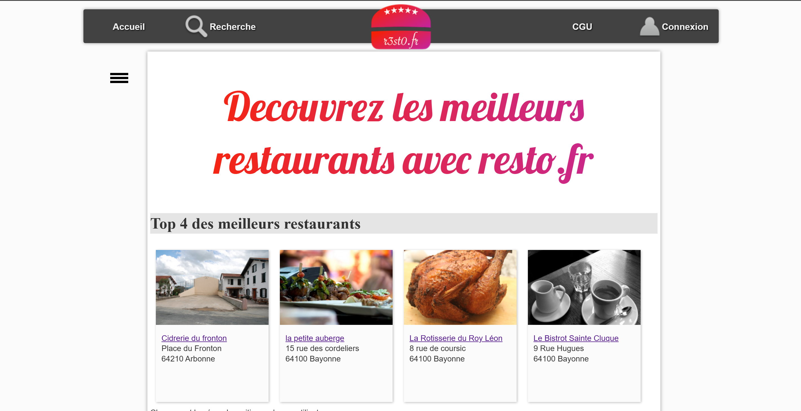

Un aperçu complet de la réalisation du projet

Site web de critique et notation de restaurants développé en équipe selon la méthode Scrum avec itérations, tickets de maintenance, déploiement continu et gestion GitLab.
R3st0.fr est un site de critique de restaurants inspiré de TripAdvisor et La Fourchette. L'objectif est de permettre aux utilisateurs de rechercher des restaurants, consulter leurs caractéristiques, lire les avis et noter les établissements. Développé en 2ème année BTS SIO selon la méthode agile Scrum.
Traiter des demandes : Résolution de tickets de maintenance, traitement des demandes d'évolution du Product Owner. Utilisation d'un outil de gestion de tickets (GitLab Issues). Application d'une méthode de diagnostic.
Analyser et Planifier : Compréhension de la méthode Scrum, analyse des User Stories. Organisation des sprints, daily scrums, utilisation du Kanban GitLab, affectation et priorisation des tickets.
Tests et Déploiement : Tests en local de chaque ticket avant merge. Déploiement continu sur serveur de production (FTP, configuration MariaDB), livraison continue à chaque itération.
Environnement & Développement : Gestion des branches Git, utilisation de GitLab. Développement de composants Symfony, utilisation de Doctrine ORM pour l'accès MariaDB.
Ré-ingénierie de la base de données, analyse de l'architecture du code, daily scrums.
PDF Itération 1Documentation des tickets résolus (diagnostic, localisation, modifications, tests).
PDF Itération 2User Story, modification BDD, développement de la fonctionnalité, déploiement.
PDF Itération 3Code source complet avec branches par ticket, historique des commits et merges.
GitLabApplication web fonctionnelle sur serveur BTS SIO (FTP + MariaDB).
Voir le site